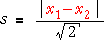

Variance
The square of the standard deviation is called the variance of the data.
variance = (standard deviation)2 = 
Since the variance is a kind of average of squared differences from the sample mean, the units of the variance are the square of the units of the original values. For example, if the values are weights in kg, the variance is a number of square kg. The standard deviation has the same units as the original values (e.g. it is a number of kg in the example above), so the numerical value of the standard deviation is easier to understand. The use of variance as a summary of spread is therefore discouraged.
However variances play a central role in more advanced statistical methods. Indeed, an important collection of methods for analysing relationships between variables is called analysis of variance. (Analysis of variance investigates the causes of variability in a measurement — some variability may be explained, and perhaps controlled, in terms of other variables whereas other aspects of variability are unexplained.)
Degrees of freedom (optional)
The divisor (n - 1) in the formula for the sample standard deviation is called its degrees of freedom. This can be thought of as the number of 'independent pieces of information' that contribute to it.
